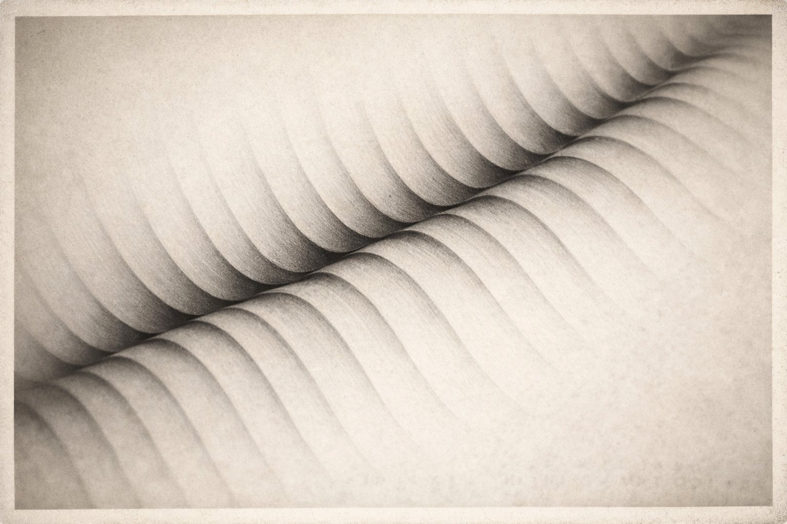
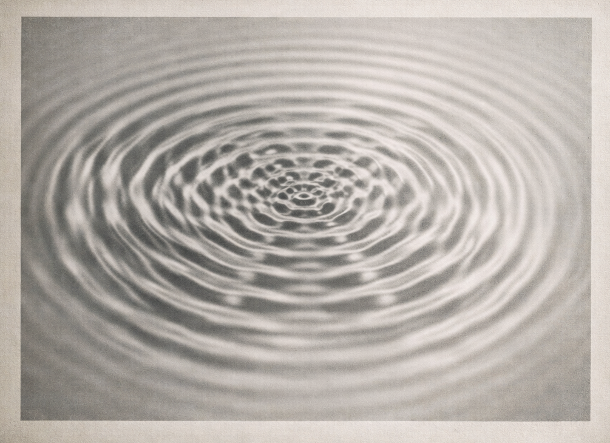
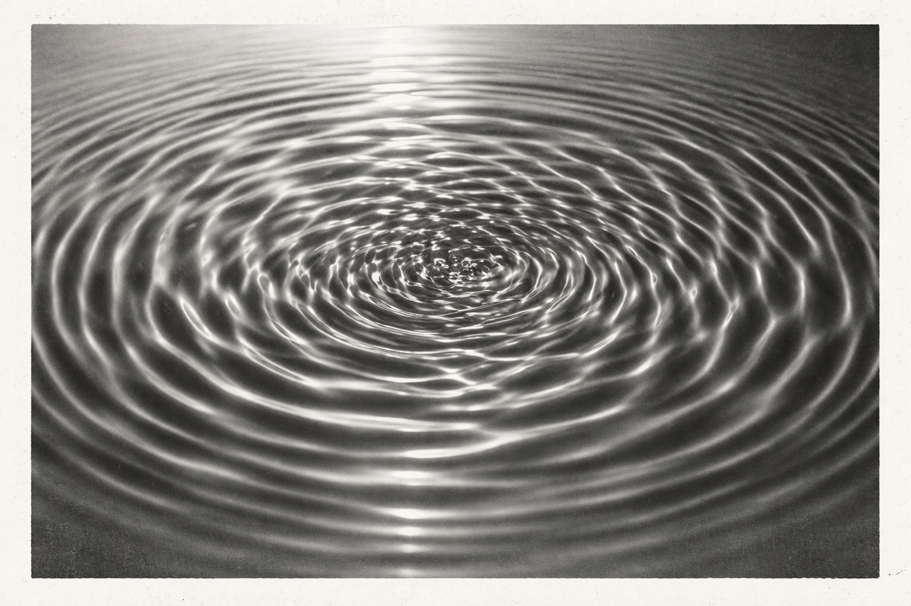
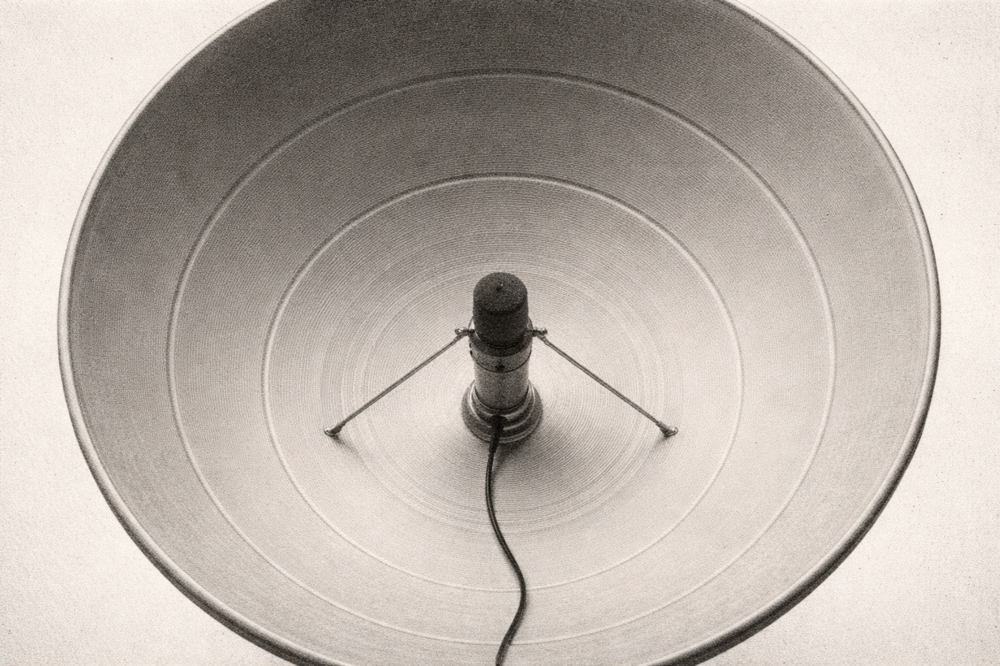
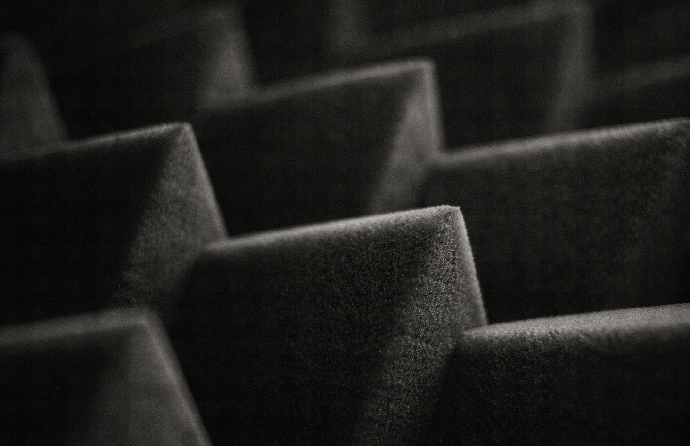

Acoustic Preservation
Every environment possesses a sonic fingerprint—a fluid composition of biological, geological, and anthropogenic rhythms. While landscapes are routinely mapped and photographed with clinical precision, their acoustic identities often remain ephemeral.
Aurafact approaches environmental recordings as archival specimens. We treat each capture as a vital snapshot in a site’s sonic evolution, transforming fleeting sound into a permanent, searchable record for scientific research, cultural memory, and deep reflection.
Archive / Recent Additions
| Specimen ID | Artifact | Location | Source Type | Subtype | Frequency Profile | |
|---|---|---|---|---|---|---|
| AF-0011 | Lyon vs PSG Match | Lyon, FR | Anthropophony | Crowd Assembly | 120 Hz – 5 kHz · layered crowd vocalisation | |
| AF-0007 | Marché Street Corridor | Kinshasa, DRC | Anthropophony | Market Activity | 150 Hz – 6 kHz · dense speech and street movement | |
| AF-0006 | Spring Canopy Chorus | Ottawa, CA | Biophony | Avian Chorus | 300 Hz – 14 kHz · intermittent birdsong activity | |
| AF-0004 | Evening Motorcycle Passage | Marseille, FR | Anthropophony | Traffic Passage | 80 Hz – 3.5 kHz · low-frequency engine resonance | |
| AF-0005 | River Edge Flow | Ottawa, CA | Geophony | River Current | 60 Hz – 5 kHz · continuous hydrodynamic noise |
"A place without its sound is only half remembered."
Aurafact · Field Notes · 2026
Principles of Acoustic Archiving
Audio-First Hierarchy
Sound is the primary artifact; visual elements exist only to provide context. When audio is active, the interface recedes, allowing the listener to inhabit the environment before attempting to interpret it.
Semantic Transparency
Metadata is never decorative. Every attribute—from frequency range and atmospheric state to microphone topology—is a critical layer of the specimen. We expose data with clarity, ensuring every recording is understood as a rigorous document rather than a mere media file.
Variable Density
The interface respects the listener’s intent. Whether a researcher requires granular technical data or an artist seeks pure atmosphere, the UI adapts its informational depth—revealing layers of insight without crowding the sensory experience.
Temporal Integrity
A recording is inseparable from its moment. Aurafact treats each capture as a spatial and temporal anchor, preserving the exact intersection of geography, ecology, and human presence at a definitive point in time.
Sonic Artifacts
We categorize environmental recordings as artifacts, not content. Each capture represents a singular acoustic state—shaped by the dialogue between terrain and atmosphere—preserved as a cornerstone of a growing global archive.
Acoustic Studies





